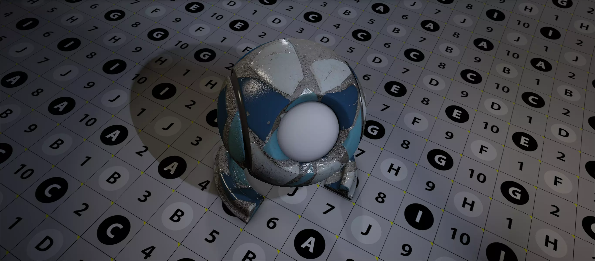
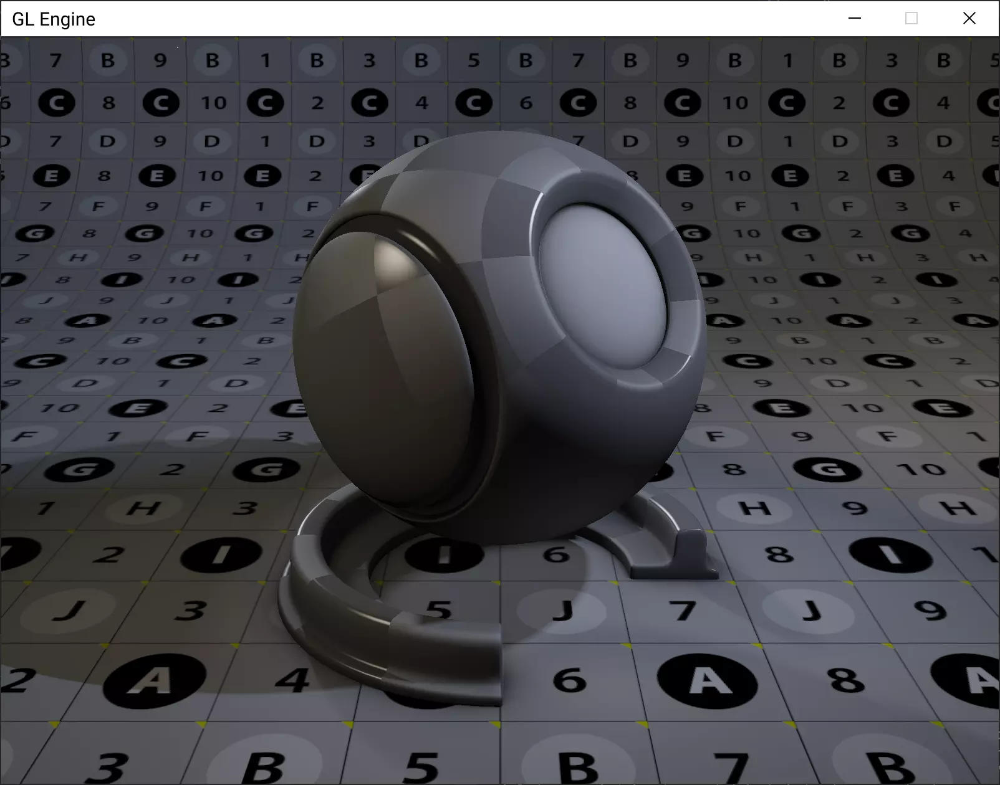
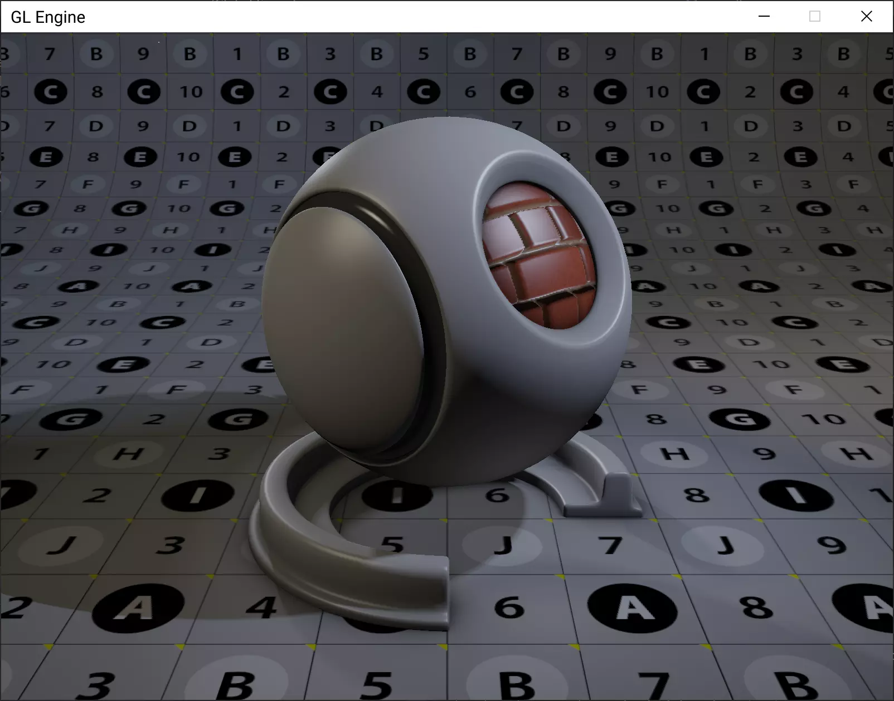

GL Engine
- C++
- OpenGL
- SDL
- Doxygen
- Sphinx
GL Engine is a real time graphics engine I built from scratch. It was built as a way of understanding how different lighting and shading algorithms work.

Process
This has been an ongoing project since 2017, when I was first learning C++. I found a mentor through Reddit who guided me in setting up the project. With his help and the help of tutorials and documentation, I've slowly built it up to a fully working library that could be used for simple real time graphics applications.

Rendering features
Shading
- Blinn master shader with texture maps, diffuse, specularity, roughness, etc.
- Normal mapping
- Parallax mapping
- Self illumination shader
- Shadow mapping from all light types
- Shadow maps from multiple lights simultaneously
- Image loading for textures
- 2D text overlay
- Cubemap environments
Post effects
- HDR tone mapping
- Deferred rendering
- Screen space ambient occlusion
- Glow effect

Scene features
Cameras
- Target camera for orbiting
- Free camera
- Orthographic camera
Lights
- Directional
- Point
- Spot
Meshes
- Various parametric primitives
- Custom OBJ loader
Documentation
Documentation is generated automatically on Read The Docs when ever a new commit is pushed. The process consists of two stages.
- Doxygen parses the documentation embedded in the C++ files
- Sphinx combines the output from Doxygen with custom templates in order to generate the documentation in a format that Read the Docs can make use of.
Future improvements
- Implement physically based rendering.
- Implement accurate real time fresnel calculations as described by Laurent Belcour at Siggraph2020.
- Better abstraction for scene objects, to separate them out from rendering objects.